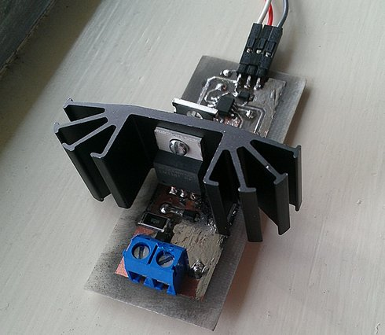
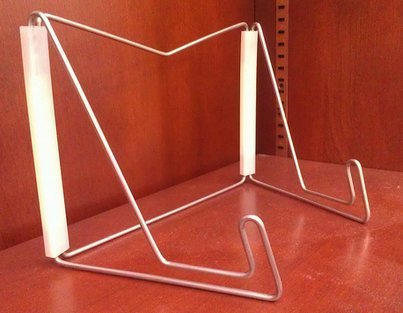
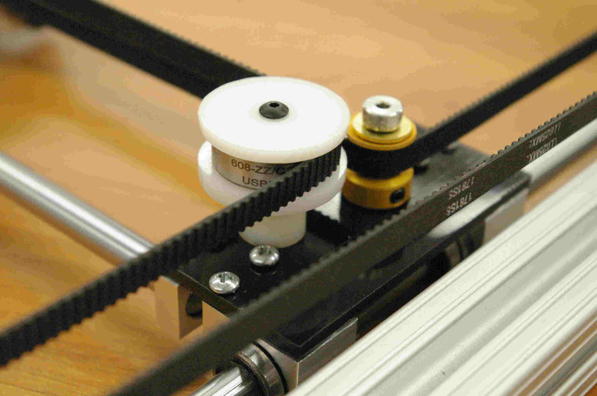
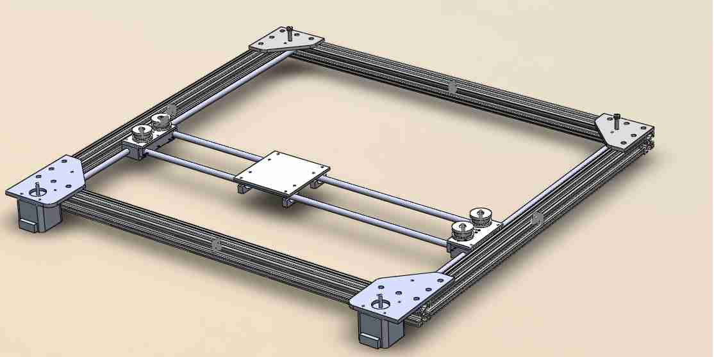
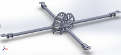
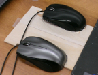
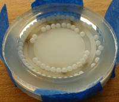
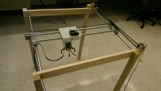
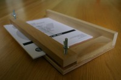
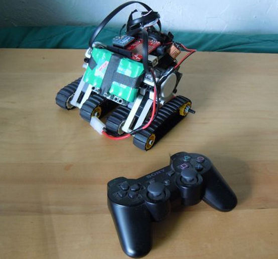

Projects
spare time spent designing ... and building!
2014
Laser Diode Driver  A constant current source for a pulsed laser diode
2013
Machined Book Holders  Predictable wire-bending for a line of scratch-made book holders
A Core-XY Implementation: a follow-up to the H-bot  An evaluation of the Core-XY as a superior design choice over the H-bot
The H-bot: a Two-Axis Gantry  Preparing for a future without a laser cutter.
CAN Bus Sonar Mount for an ROVAn underwater embedded system for rotating a sonar
The Carbon Fiber Multicopter  A composite quadcopter rapidly fabricated from laser-cut composite layups.
Dual Mouse Odometry  An E190: Autonomous Robot Navigation final project with Lauren Lieu.
Magnetically-Coupled Underwater Thrust Bearings  A proof of concept for underwater rotating mechanisms .
2012
The Claw Crane  A MicroPs final project with the combined forces of Nicole Yu.
2011
Book-Binding Rig  an apparatus for gluing large stacks of notes together, when a stapler just wont cut it.
Instructable: PS3-Controlled Robot with Wireless Communication  An brief instructable detailing how to drive an arduino-based application with a PS3 controller using Processing.